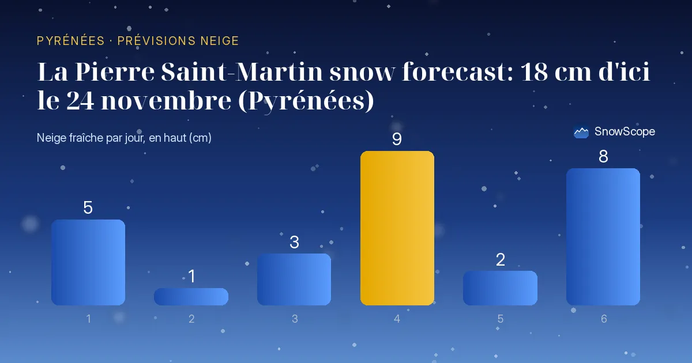

Bulletins neige · Pyrénées
Pyrénées: La Pierre Saint-Martin snow forecast – D'ici le 24 novembre, la prévision donne 19 cm à Astun, 18 cm à La Pierre Saint-Martin et 17 cm à …
La neige par pays aujourd'hui
Les pays les plus blancs aujourd'hui : France (14 %), Andorre (5 %) et Espagne (0 %).
Le plus de neige fraîche dans la semaine : France (92 cm), Andorre (26 cm) et Espagne (21 cm).
La neige aujourd'hui dans les grandes stations
- Gavarnie-Gèdre · 27 cm
- Peyragudes · 21 cm
- Piau-Engaly · 16 cm
- Canaro · 15 cm
- Grand Tourmalet · 14 cm
- GrandValira · 13 cm
- Luz-Ardiden · 13 cm
- Estació d'Esquí Baqueira-Beret · 12 cm
- Aramón Cerler · 11 cm
- Candanchu · 10 cm
- Gourette · 10 cm
- Astun · 9 cm
- Saint-Lary · 9 cm
- Ax 3 Domaines · 8 cm
- Boí Taüll · 8 cm
- La Pierre Saint-Martin · 6 cm
- Ordino-Arcalis · 6 cm
- Pal-Arinsal · 5 cm
- Formigal · 3 cm
- La Molina · 3 cm
- Masella · 3 cm
- Les Angles · 1 cm
- Estació d'esquí de Port-Ainé
- Estació d'esquí Port del Comte
À la une

Moins de jours de neige aux 120 points étudiés dans les Pyrénées depuis 1980-81, surtout sous 1 500 m : notre série de 46 hivers et la recherche.

Grandvalira est souvent vendue comme une destination pas chère en décembre, pourtant la neige naturelle à la base n'atteint en moyenne que 9 cm lors des hivers passés.

Un mélange de pluie et neige est attendu sur les Pyrénées au cours des trois prochains jours, l'isotherme 0 °C dépassant les sommets des stations dès dimanche. Entre 13 et 24 cm de neige nouvelle prévue en altitude.

Pluie prévue alors que le niveau de congélation monte à 4 080 m ; la neige mesurée le 15 novembre est fine (moins de 20 cm) dans toutes les grandes stations des Pyrénées.

Piau-Engaly domine la prévision avec 37 cm de neige fraîche d'ici le 13 novembre ; 24 cm sont attendus le 12 novembre.
La Pierre Saint-Martin snow forecast: 18 cm d'ici le 24 novembre (Pyrénées)

La Pierre Saint-Martin snow forecast – D'ici le 24 novembre, la prévision donne 19 cm à Astun, 18 cm à La Pierre Saint-Martin et 17 cm à Artouste, avec moins de certitude à mesure qu'on s'éloigne. Le modèle pour les stations de ski, les instruments pour les stations de mesure : le premier estime le haut du domaine, le second mesure un point à la date indiquée. Confiance : bonne pour la tendance, plus faible pour chaque chiffre pris seul.
La hauteur du jour, en chiffres
Classement de ces stations : Cauterets Cirque du Lys en tête avec environ 19 cm sur le haut du domaine, puis Artouste 14 cm et Astun 9 cm.
Le compte du jour dans les Pyrénées : 39 stations sur 53 avec de la neige en haut, 1 360 km² de sol enneigé.


Des forfaits journée dans les Pyrénées à partir de 46 EUR : six stations en France, en Espagne et en Andorre comparées par prix, puis par l'enneigement qu'elles connaissent habituellement en décembre et en janvier.

Les Pyrénées verront 91 cm de neige nouvelle en 14 jours, avec moitié tombant en semaine 1. Les pentes hautes au-dessus de 2 500 m en reçoivent le plus. Prévision du 2026-11-18.

La surface enneigée a bondi de 560 à 1 710 km² entre le 17 et le 19 novembre. Piau-Engaly conserve la plus grande épaisseur de neige avec 15 cm en altitude le 19 novembre.


Boí Taüll commence à 2 039 m et bat Baqueira Beret sur le prix du forfait, bien que la neige de début décembre demande un peu de patience.

Cauterets propose 25 km de pistes pour 46 EUR, mais notre historique d'enneigement montre que la meilleure chance d'avoir de la neige est la dernière semaine de décembre.

Comparez Grandvalira et les stations espagnoles en décembre 2026 pour les hauteurs de neige, l'altitude des remontées et les prix à partir de 49,00 EUR.

Pour une semaine de ski en famille à petit budget à Astún-Candanchú en décembre, visez la fin du mois, quand les pistes supérieures ont une bonne neige dans 67 % des hivers passés.

Vous prévoyez un voyage en décembre à Baqueira Beret ? Consultez notre historique d'enneigement, les prix des forfaits à partir de 70,00 € pour une journée, et comparez avec Astún-Candanchú.

Surface enneigée : 910 km² le 12 novembre, 1 100 km² aujourd'hui, 640 km² prévus le 17 novembre. À suivre. Pluie et neige mêlées : la neige n'est …

Lisez la neige du jour dans les Pyrénées et vous obtenez poudreuse fraîche, neige fine de début de saison et de l'air doux qui peut laisser une …

Les cartes du jour regardent deux semaines devant dans les Pyrénées, du 13 novembre au 26 novembre. Elles viennent de les deux modèles mondiaux qui …

Piau-Engaly le 12 novembre : niveau de congélation à 3 060 m apporte un risque de pluie malgré 16 cm de neige fraîche en 72 heures.

Bulletin neige dans les Pyrénées, 12 novembre. D'ici le 15 novembre, la prévision apporte 33 cm à Cauterets Cirque du Lys, 29 cm à Piau-Engaly et …

L'Andorre n'a pas de grand aéroport : rejoindre Grandvalira depuis Barcelone ou Toulouse, le tunnel d'Envalira, la route CG2 et les parkings.

Gourette et Cauterets côte à côte : altitudes, neige habituelle par mois, meilleures semaines et accès, d'après 46 hivers passés.

Baqueira-Beret est dans le Val d'Aran, côté atlantique des Pyrénées. Ce que cela change pour sa neige, vérifié sur 46 hivers passés face à La Molina, et quand y aller.